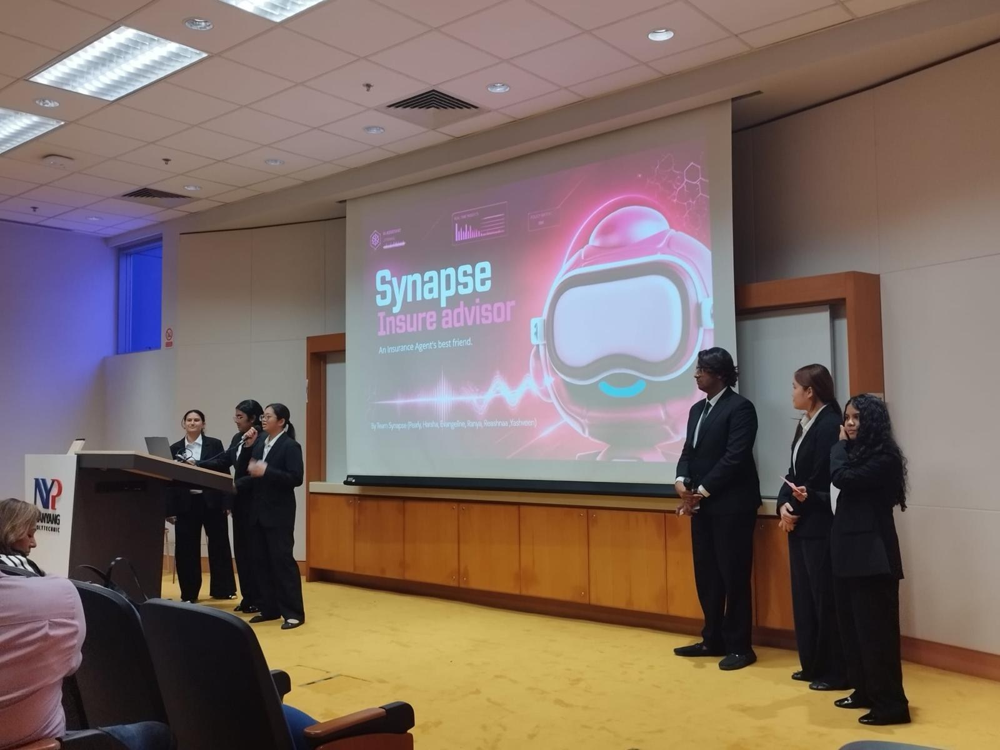
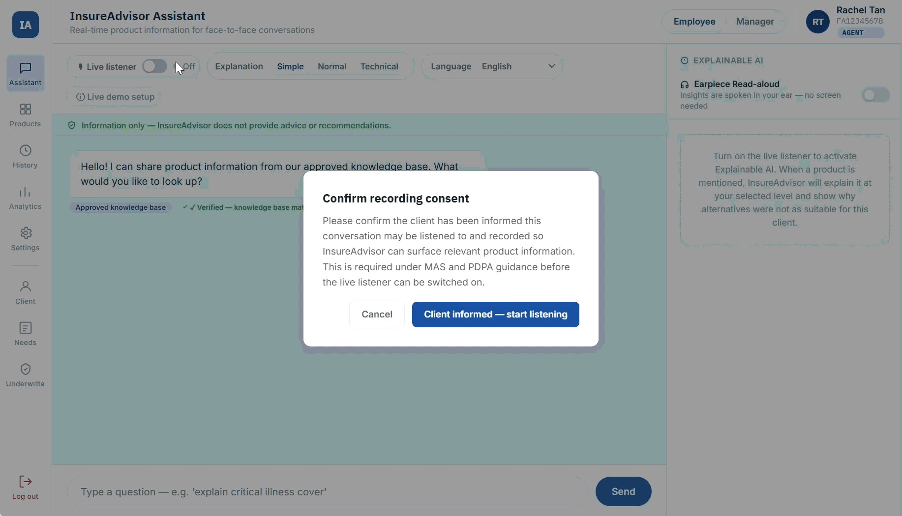
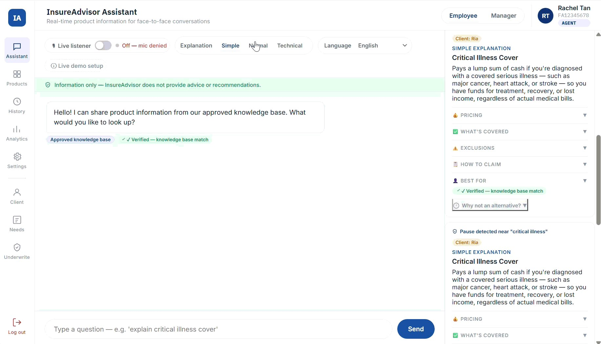
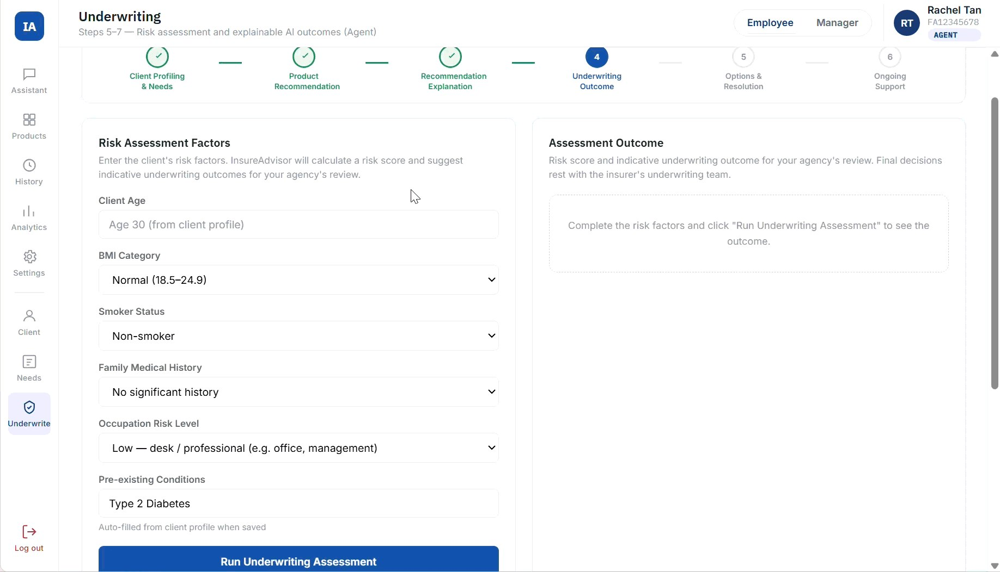
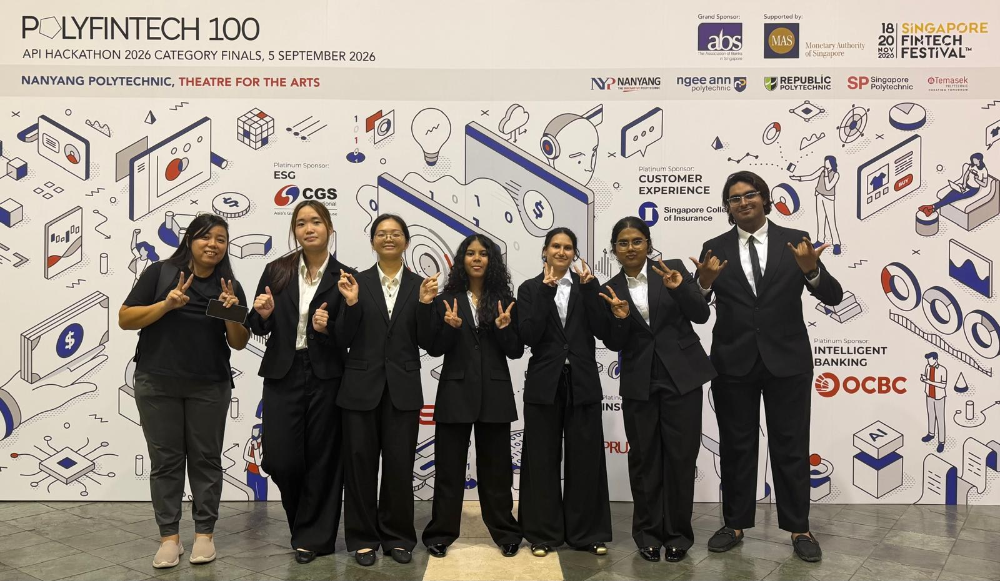
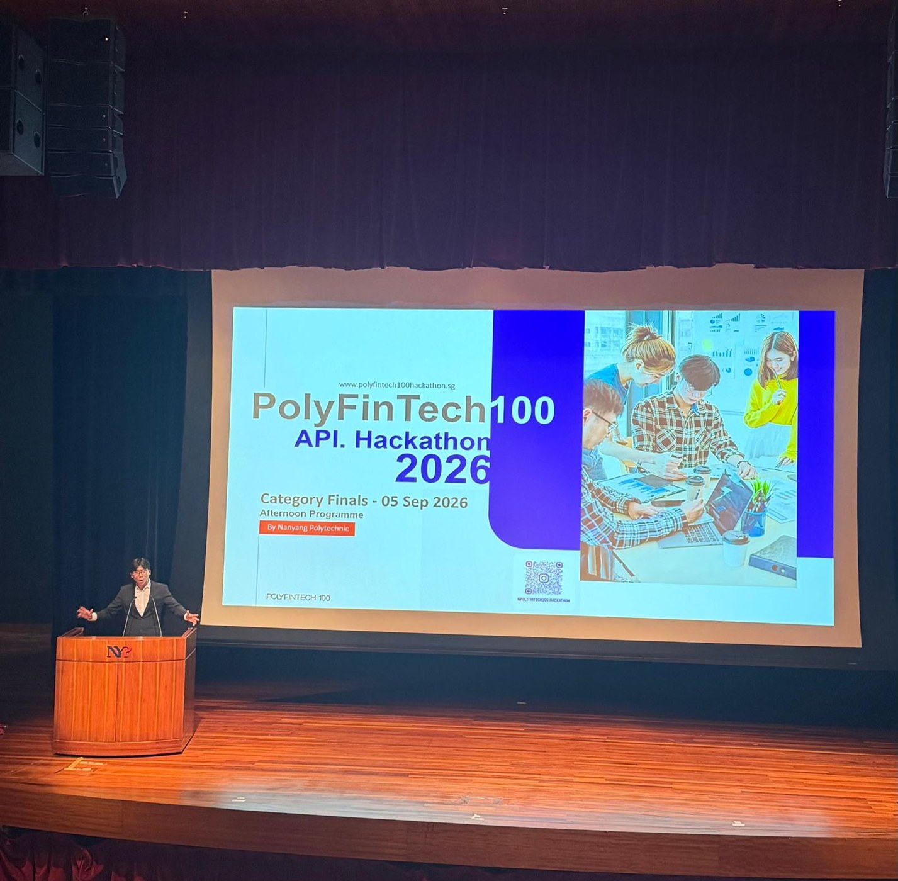

Synapse Insure Advisor
An AI assistant prototype designed to support insurance representatives during face-to-face conversations with clients.
Overview
For the PolyFinTech 100 API Hackathon 2026, our six-member team developed Synapse Insure Advisor, an AI-powered assistant concept for insurance representatives. We focused on a challenge they face during client meetings: finding accurate product information while explaining complex policy terms in a clear and confident way.
Our project was entered in the Customer Experience category, supported by the Singapore College of Insurance (SCI). We progressed to the Category Finals and presented our solution at Nanyang Polytechnic on 5 September 2026.

Our solution
We created an interactive hackathon prototype to communicate how the proposed assistant could support representatives during in-person conversations. The main ideas were:
- Synapse Listen: A consent-based listener intended to identify relevant discussion topics during a client conversation.
- Synapse Insights: Relevant insurance product information surfaced to help representatives answer questions.
- Jargon Simplify: Explanations of complicated insurance terms in simpler, client-friendly language.
- The Polyglot: A proposed multilingual option to support conversations across different languages.
- Secure Data: Proposed access controls and separation of company information to help protect sensitive data.
The prototype also included example explainable-AI information panels and an illustrative underwriting assessment workflow. These screens demonstrate the concept; they do not represent a deployed insurer system or real underwriting decisions.
Prototype showcase



My contributions
I helped facilitate team discussions, brainstorm ideas, manage tasks and oversee the development of our prototype so that the different parts came together into one clear solution. I was also one of the main presenters, helping explain the concept and demonstrate its potential value to the evaluation panel.
Product planning
We explored how the idea could be developed beyond the hackathon, including a proposed 12-month development roadmap, estimated implementation costs and potential subscription pricing. These were planning estimates, not costs or revenue from a launched product.
Competition & recognition
Our team advanced to the Customer Experience Category Finals of the PolyFinTech 100 API Hackathon 2026. The experience gave us an opportunity to present our idea and prototype to an evaluation panel alongside other student teams.



What I gained
The hackathon helped me understand how AI might support customer experience in insurance, while making me think more carefully about data privacy, consent and responsible use of information. It also strengthened my skills in team coordination, idea development and presenting under time constraints.
This was a hackathon concept and prototype, not a commercially deployed insurance system. Proposed AI, language and security features are described as product ideas rather than verified production capabilities.